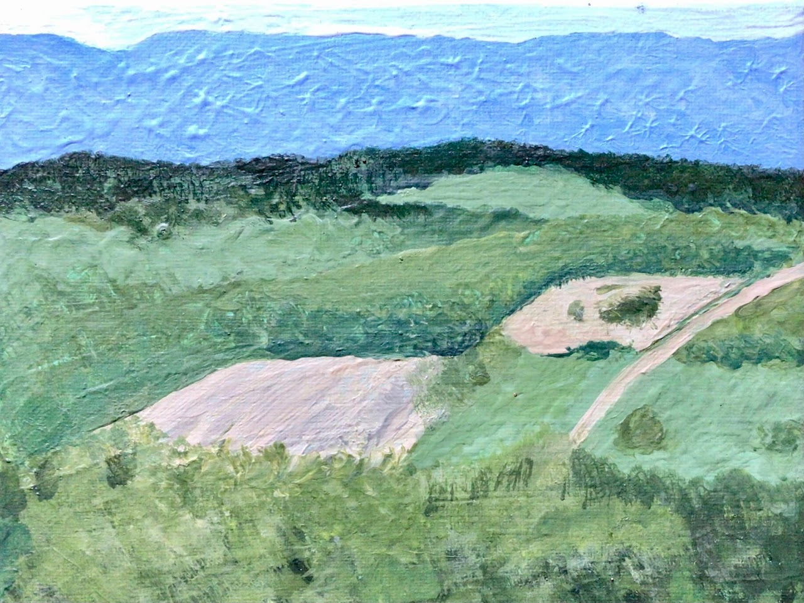
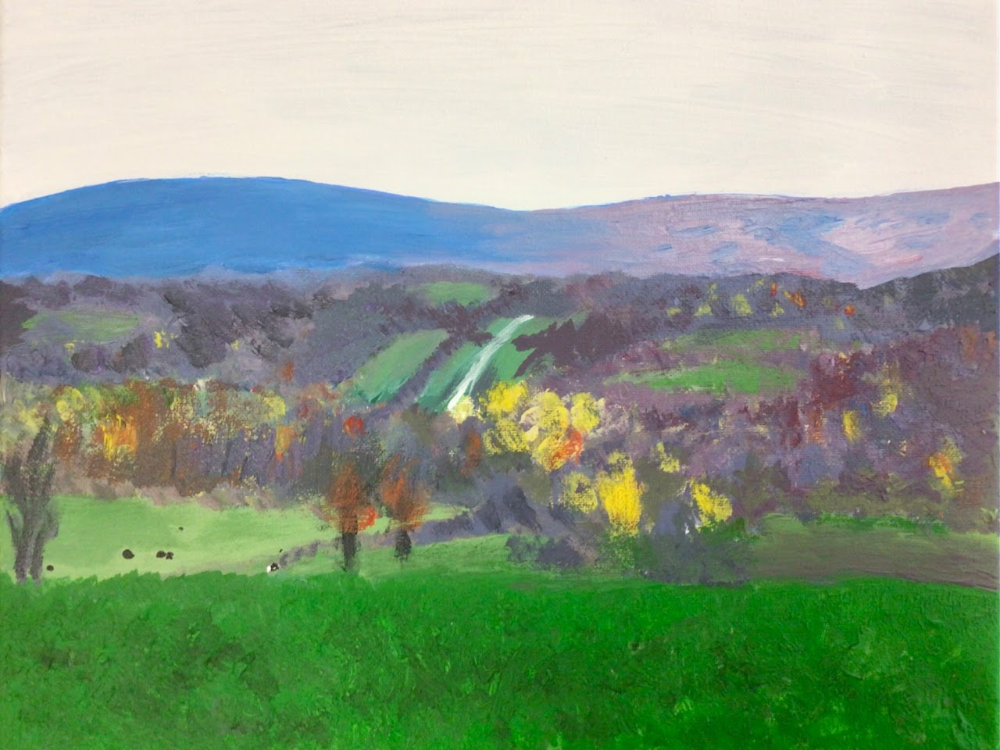
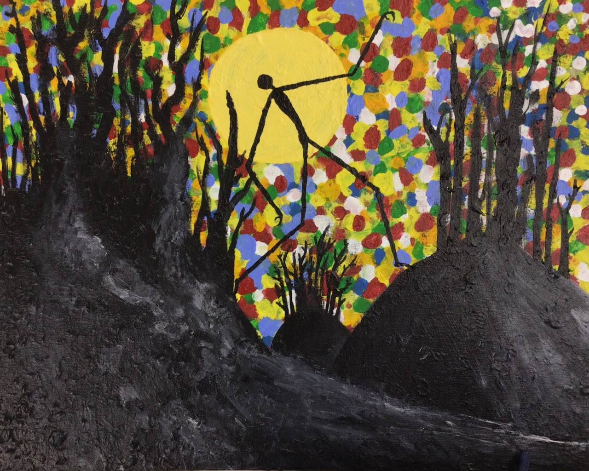

"The View from Quaker Hill," acrylic painting

"East Tower Cottag," ceramic house

"A Caterpillar's Day," collage painting

"Skaket Beach," watercolor painting

"The Screeching Trees," pen, pencil, and tortillon drawing

"Linus Mowing," collage painting

"Daphnis and the Pumpkin Under the Dark Tree," watercolor pencil painting with details in pen and shading in pencil

"At Quaker Hill in Autumn," acrylic painting

"Living On," acrylic painting
"The River of Windfall Light," final project for Cinematography Foundations, won Best Experimental Film award at 2025 Burr and Burton Film Festival
"A Picture Book of Memories," video project for CP Myth and Memoir